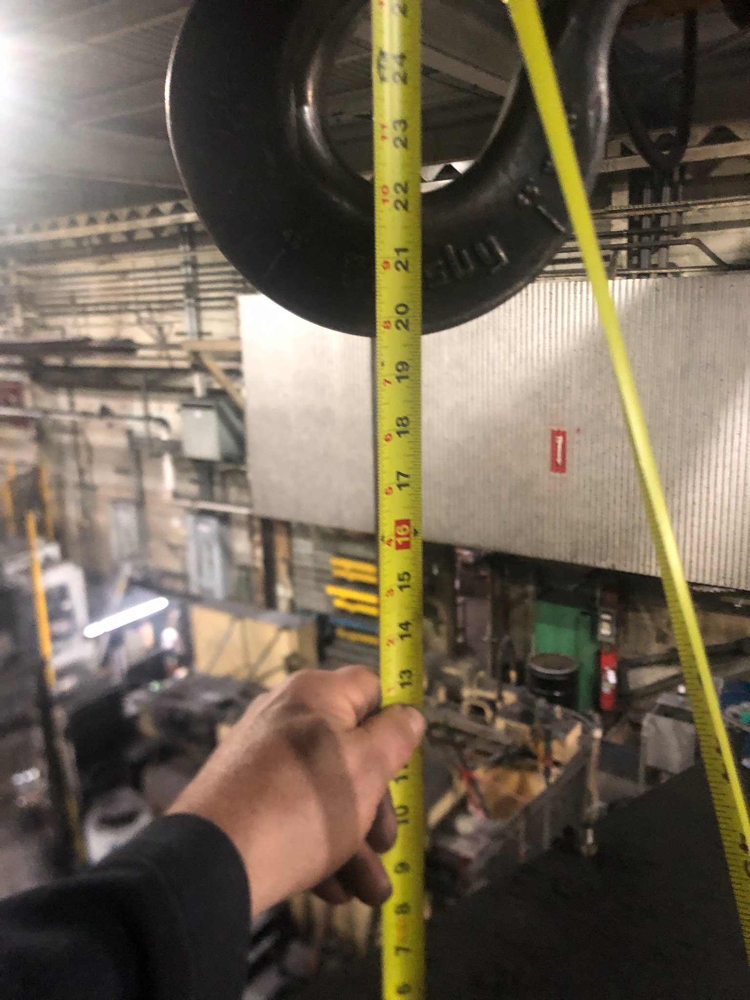

Heat-treat tower replacement
Checked crane clearance, built the replacement schedule with input from the team, and coordinated a rigging quote for a heat-treat tower replacement.
Installed; initial parts run documented
Brief
Replacing the tower inside an existing heat-treatment cell required checking what had to come apart, whether there was room for the crane lift, and how to sequence the work.
My work
Measured the tower and checked clearance to the crane, documented the parts that needed to come off, and converted a colleague's task list into a Microsoft Project schedule using duration estimates from the team.
- Inspected the tower in place, photographed the items that needed disassembly, and discussed the replacement location with a colleague.
- Checked the clearance between the tower and the overhead crane and reviewed replacement parts for the bed's X–Y positioning mechanism.
- Walked the rigging contractor through the tower, obtained a quote, and put the team’s task list and duration estimates into Microsoft Project.
Result
The rigging contractor removed the old tower and moved the replacement into position. Maintenance handled the exhaust and upper cover, and the equipment vendor installed and wired the new controls computer. The January 2026 work update recorded an initial parts run; final sample quality checks were still to be confirmed.